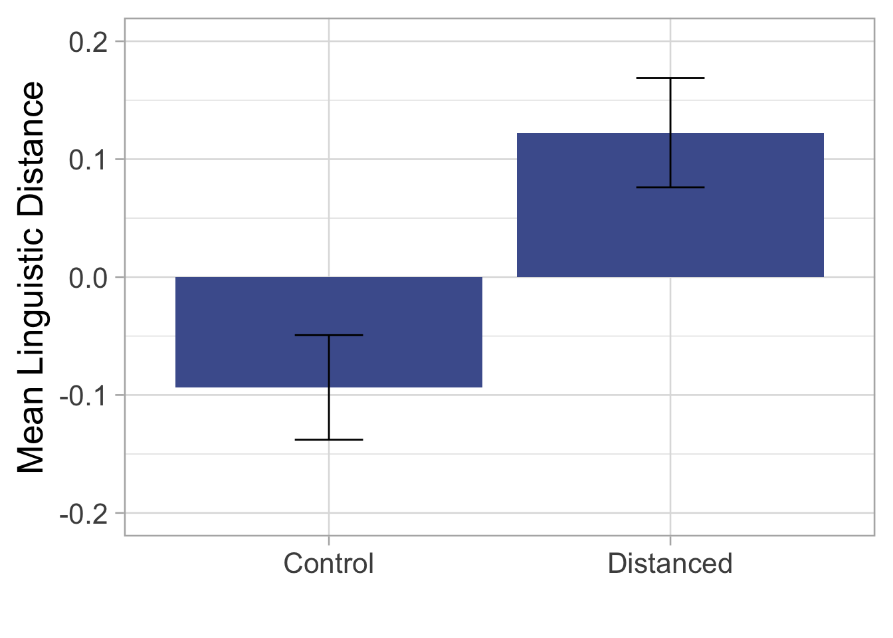
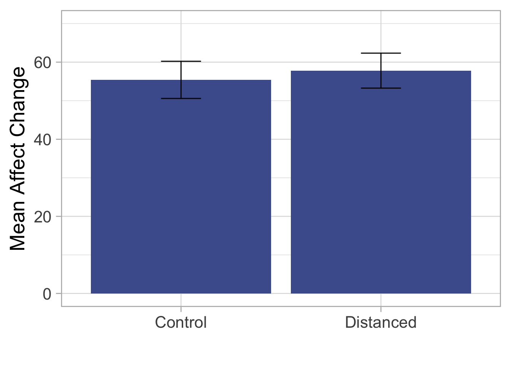

library(tidyverse)
library(dplyr)
library(lsr)
library(mediation)
library(datawizard)
library(report)
library(knitr) # For nice tables
library(kableExtra) # For nice tables
library(ggplot2) # For nice plotsIntro
Here, I’ll provide a walkthrough of a mediation analysis, along with some initial statistical tests. This example uses data from a study examining the effects of a linguistic distancing manipulation on reappraisal efficacy in a sample of adolescents. Participants were randomized into control and distanced groups before completing a cognitive reappraisal exercise. The distanced group were instructed to avoid using the word “I” and the present tense, while the control group received no specific instructions. Affect was measured both pre- and post-reappraisal on a sliding scale from Very Bad (-100) to Very Good (100). The pre-post change in affect was used as our outcome measure of reappraisal success.
These are the 4 questions we wanted to test:
- Does linguistic distancing differ by condition?
- Is linguistic distancing correlated with affect change?
- Does affect change differ by condition?
- Does linguistic distancing mediate the association between condition and affect change?
[image of mediation model]
Environment set-up
First, lets load in all the packages we need. If you don’t have a package installed, you can run install_packages(‘packagename’)
Next, load in your data.
data <- read_csv("data.csv")My data contains the following variables:
ID: Participant ID
Condition: 0 for control group, 1 for distanced group
Duration_minutes: Number of minutes taken to complete task
psychdist: Score for linguistic distance
affect_change: Change in affect from pre- to post-reappraisal
WC: Total word count for reappraisal response
Code
head(data) %>%
kable()| ID | Condition | Duration_minutes | psychdist | affect_change | WC |
|---|---|---|---|---|---|
| 1 | 0 | 401.0130 | -0.6245898 | 30.27715 | 42.59283 |
| 2 | 0 | 488.1809 | 0.2759279 | 18.67820 | 115.21387 |
| 3 | 0 | 595.5391 | 0.6519053 | 109.55336 | 48.47611 |
| 4 | 0 | 1231.6437 | 0.1463954 | 35.20107 | 79.69326 |
| 5 | 0 | 716.5663 | -0.0147644 | 57.21294 | 33.10408 |
| 6 | 0 | -491.8542 | 0.1977090 | 36.91108 | 121.86949 |
Question 1. Does linguistic distancing differ by condition?
We can use a t-test to find out whether the linguistic distancing manipulation worked as expected i.e., whether the distanced group had higher distancing scores compared to the control group. The effect size can be measured using the Cohen’s d statistic.
# Does linguistic distancing differ by condition?
t.test(psychdist ~ Condition, data=data)
cohensD(psychdist ~ Condition, data=data)Code
t.test(psychdist ~ Condition, data=data) %>%
report_table() %>%
summary()Difference | 95% CI | t(996.08) | p | d
--------------------------------------------------------
-0.22 | [-0.28, -0.15] | -6.60 | < .001 | -0.42
Alternative hypothesis: two.sidedThere is a significant difference between the two groups, p < .001, d = .42.
We can visualize this difference using a bar plot. Here, I first calcualate the 95% confidence intervals, so we can show these on the plot. Then I use ggplot to create the plot - take a look at the comments to see what each line of code is doing.
lingdist_msd <- data %>%
dplyr::select(ID, Condition, psychdist) %>%
na.omit() %>% # Remove any missing values
group_by(Condition) %>%
summarize(mean = mean(psychdist), # Mean
sd = sd(psychdist), # Standard deviation
se = sd / sqrt(n()), # Standard error
CI_lower = mean - (1.96 * se), # Lower CI bound
CI_upper = mean + (1.96 * se)) %>% # Upper CI bound
mutate(Condition = as.factor(Condition))
ggplot(lingdist_msd, aes(x=Condition, y=mean)) + # Input variables
geom_bar(position=position_dodge(), stat="identity", # Add bars
fill="#4b5e9c") +
geom_errorbar(aes(ymin=CI_lower, ymax=CI_upper), width=.2) + # Add CI bars
scale_x_discrete(labels=c('Control',
'Distanced')) + # Rename x axis labels
coord_cartesian(ylim=c(-0.2, 0.2)) + # Set y axis limits
ylab("Mean Linguistic Distance") + xlab("") + # Set axes labels
theme_light(base_size=20) # Set plot theme and font size
Question 3. Does affect change differ by condition?
# Does affect change differ by condition?
t.test(affect_change ~ Condition, data=data)Code
affect_change_msd <- data %>%
dplyr::select(ID, Condition, affect_change) %>%
rename(Change = affect_change) %>%
group_by(Condition) %>%
summarize(mean = mean(Change),
sd = sd(Change),
se = sd / sqrt(n()),
CI_lower = mean - (1.96 * se),
CI_upper = mean + (1.96 * se)) %>%
mutate(Condition = as.factor(Condition))
ggplot(affect_change_msd, aes(x=Condition, y=mean)) +
geom_bar(position=position_dodge(), stat="identity",
fill="#4b5e9c") +
geom_errorbar(aes(ymin=CI_lower, ymax=CI_upper), width=.2) +
scale_x_discrete(labels=c('Control',
'Distanced')) +
coord_cartesian(ylim=c(0,70)) +
ylab("Mean Affect Change") + xlab("") +
theme_light(base_size=20)
Question 4. Does linguistic distancing mediate the association between condition and affect change?
# Create standardized variables
data <- data %>%
mutate(affect_change_z = datawizard::standardize(affect_change),
psychdist_z = datawizard::standardize(psychdist))Code
head(data) %>%
kable()| ID | Condition | Duration_minutes | psychdist | affect_change | WC | affect_change_z | psychdist_z |
|---|---|---|---|---|---|---|---|
| 1 | 0 | 401.0130 | -0.6245898 | 30.27715 | 42.59283 | -0.49316131 | -1.20988948 |
| 2 | 0 | 488.1809 | 0.2759279 | 18.67820 | 115.21387 | -0.71044376 | 0.49508786 |
| 3 | 0 | 595.5391 | 0.6519053 | 109.55336 | 48.47611 | 0.99191628 | 1.20693716 |
| 4 | 0 | 1231.6437 | 0.1463954 | 35.20107 | 79.69326 | -0.40092173 | 0.24984013 |
| 5 | 0 | 716.5663 | -0.0147644 | 57.21294 | 33.10408 | 0.01142558 | -0.05528865 |
| 6 | 0 | -491.8542 | 0.1977090 | 36.91108 | 121.86949 | -0.36888816 | 0.34699367 |
# Mediation analysis
fit.totaleffect = lm(affect_change_z ~ Condition, data)
summary(fit.totaleffect)
fit.mediator = lm(psychdist_z ~ Condition, data)
summary(fit.mediator)
fit.dv = lm(affect_change_z ~ Condition + psychdist_z, data)
summary(fit.dv)
set.seed(123)
#results = mediation::mediate(fit.mediator, fit.dv, treat='Condition', mediator='psychdist_z', sims = 10000, boot=T, boot.ci.type = "bca")
#summary(results)# Exploring word count
t.test(WC ~ Condition, data=data)
cohensD(WC ~ Condition, data=data)
summary(lm(affect_change ~ WC*Condition, data=data))